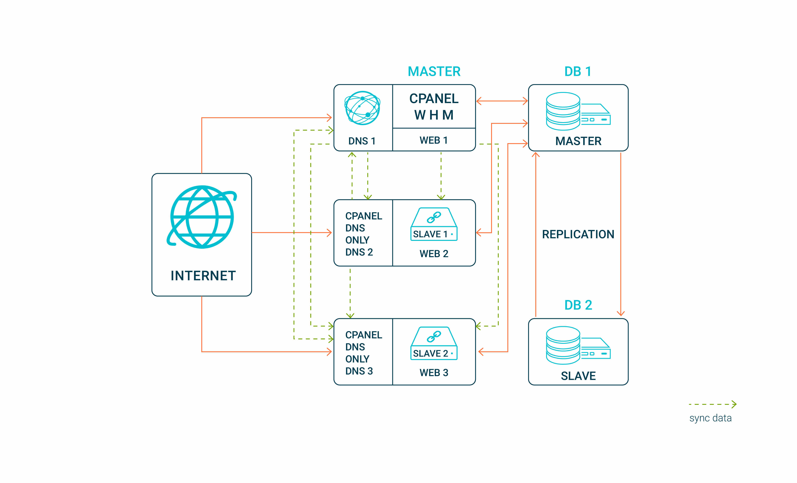

nDeploy cluster architecture¶
Software components¶
nDeploy (Script that generates nginx configuration for all nginx servers in the cluster) nDeploy-cluster-slave (A trimmed down version of nDeploy that is useful on the slave)
csync2 - http://oss.linbit.com/csync2/ - Synchronize the nginx config on the cluster
unison - https://www.cis.upenn.edu/~bcpierce/unison/ - Synchronize /home/user directory
cPanel DNS cluster - DNS clustering and LoadBalancing
MySQL Replication or a Dedicated MySQL server - For providing a redundant MySQL database
LoadBalancing¶
This happens at the DNS layer. The DNS server return multiple A records in round-robin fashion making each successive request to point to different servers in the cluster .
Thus you achieve horizontal scalability as each server is doing request processing on its own
HighAvailability¶
High availability for the webstack:
Modern browsers are smart enough to query DNS and redirect to next A record if it is unable to connect to one . There may be slight delays in connections and this may not work with old web browsers or commandline http clients. But Our tests with modern Chrome/Safari/FireFox etc returned positive results
High availability for MySQL:
Each nginx server is configured to connect to one or more upstream mysql servers thus creating a failover for scripts accessing MySQL
High availability for Email:
PostFix server configured on the slave acts as a queue and forward backupMX for the exim MTA on the cPanel master and thus provide uninterrupted SMTP for the domains